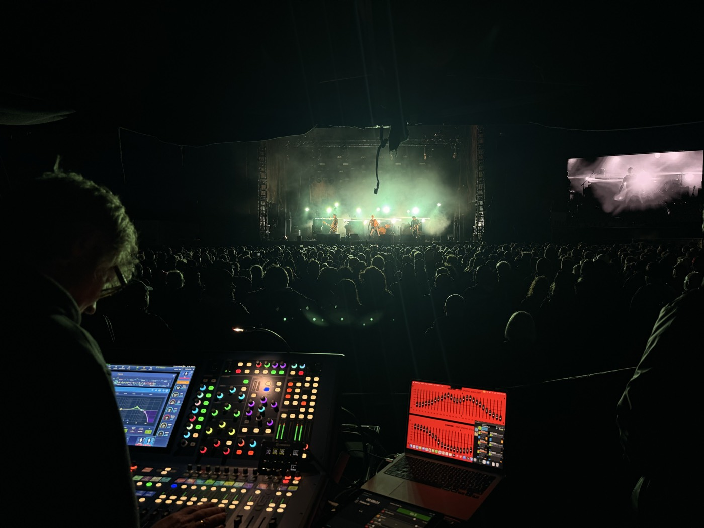

Sceneskift våren 2027
Hvilken sal bør Maja velge?
MET3 Arbeidskrav 2. Bjarte Laa, Petter Garli og Maxime Boudailliez
Maja må velge sal for tolv konserter
Konsertene går fra januar til juni 2027. Maja kan leie én av tre saler, eller la være. Hun regner med å kunne ligge ute med , men det er ikke avklart.

Først måtte tallene fra 2026 stemme
Billettsalget i 2026 er grunnlaget for anslaget i 2027. Ordrene ble renset og avstemt mot oppgjøret, konsert for konsert.
- 1 791transaksjoner i ordreeksporten
- 16avbrutte betalinger fjernet
- 5dobbeltførte transaksjoner fjernet, alle på konsert 8
- 1 770rader igjen, refusjoner med
- 12konserter avstemt mot oppgjøret
Konsert 10 i 2026 stemmer ikke helt
Ordrene har 2 billetter (700 kr) færre enn oppgjøret. Modellen bruker nå: . Valget flytter nåverdien med under 1 000 kr.

Slik henger modellen sammen
Trykk på en lapp for å følge et tall fram til rådet. Åpne tavla i eget vindu
B tjener mest, men krever mest penger tidlig
Hver prikk er en handling. Langt opp er høy nåverdi. Til høyre for streken trenger avtalen mer enn rammen.
Pengene går ut før de kommer inn
Akkumulert saldo ved slutten av hver måned i basisscenariet. Figur 1 i arbeidsboka.
Hva om salget svikter eller pakken blir dyrere?
Scenario
Salg, andel av 2026
Pakkepris per konsert
Utkast
Rådet: , hvis tre ting er på plass
Før Maja signerer
- Rigg & Ro bekrefter pakkeprisen. Ved 80 % salg holder C rammen så lenge pakken koster under 61 377 kr.
- Rammen på er på plass.
- Skarvkaien garanterer 450 salgbare plasser i oppsettet vi skal bruke.

Takk for oss
Spørsmål?
Rådet: , hvis pakkeprisen, rammen og plassene er bekreftet før signering.
Piltaster for å bla. N viser notater.